Chapitre 3 — ALI en régime linéaire
Présentation générale de l'ALI (brochage, alimentation symétrique, régimes linéaire/saturé), le modèle de l'ALI idéal « de gain infini », et les 5 montages fondamentaux (suiveur, non inverseur, inverseur, intégrateur, dérivateur). Les 14 questions du cours sont résolues intégralement, avec les écarts possibles à la réponse linéaire (saturations en tension et en courant). AM2 · P2030 · Semestre 3 — D. Courtois, 17/09/2026.
1. Présentation générale d'un Amplificateur Linéaire Intégré (ALI)
1.1 · Le brochage de l'ALI
Trois broches principales définissent son fonctionnement électrique :
- une entrée non-inverseuse (+), portée au potentiel \(v_+\) ;
- une entrée inverseuse (−), portée au potentiel \(v_-\) ;
- une sortie, portée au potentiel \(v_s\), qui est directement la réponse du montage (\(s=v_s\)).
Selon le montage, le signal d'entrée est appliqué directement sur l'entrée (+) (\(e=v_+\)) ou (−) (\(e=v_-\)), ou indirectement. On note \(\varepsilon=v_+-v_-\) la tension différentielle d'entrée.
L'ALI étant actif, il a besoin d'un apport d'énergie pour fonctionner : il est alimenté, le plus souvent par une source de tension idéale continue symétrique \(+15\text{ V}/-15\text{ V}\). Trois broches supplémentaires apparaissent donc autour de l'ALI :
- une arrivée d'alimentation \(+V_{CC}=+15\) V ;
- une arrivée d'alimentation \(-V_{CC}=-15\) V ;
- une masse, référence \(V=0\) pour tous les potentiels.
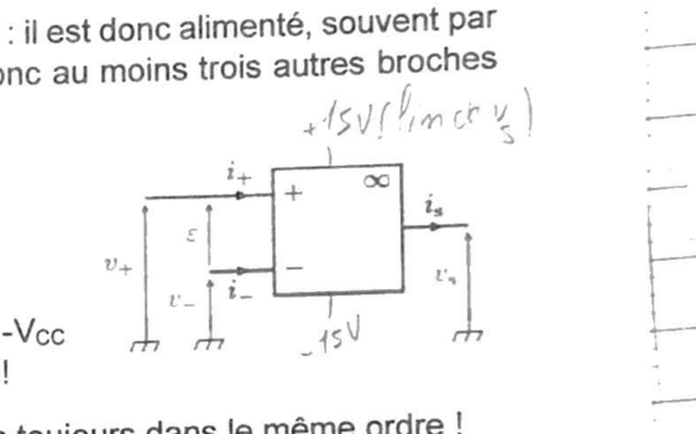
Schémas conventionnels : en rectangle ou en triangle, avec (+) et (−) pas toujours dans le même ordre d'un schéma à l'autre — il faut toujours vérifier sur le dessin lui-même.
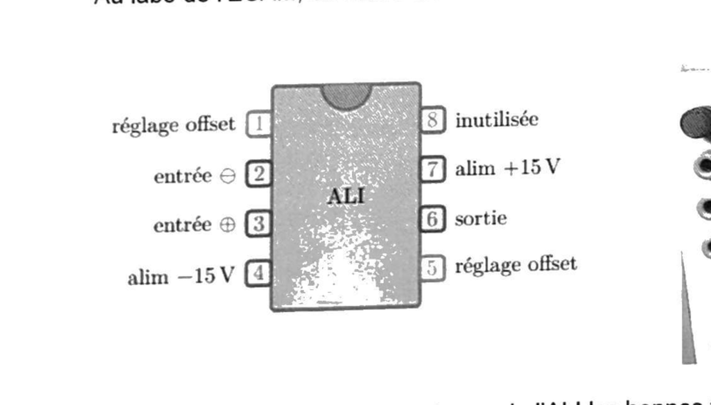
Attribuer à chaque borne de l'ALI les bonnes fiches de la platine utilisée au labo de l'ECAM.
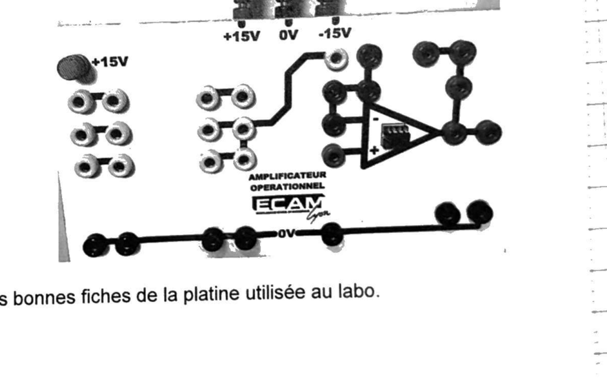
Correspondance broches du boîtier / fiches de la platine
Étape 1 : la règle
On compare le brochage DIP8 du cours au triangle imprimé sur la platine. Chaque broche se relie à la fiche qui a le même rôle électrique.
Étape 2 : les signaux
- Broche 2, entrée (−) : fiche « − » du triangle (en haut).
- Broche 3, entrée (+) : fiche « + » du triangle (en bas).
- Broche 6, sortie \(v_s\) : fiche de sortie, à droite du triangle.
Étape 3 : l'alimentation
- Broche 7, \(+V_{CC}\) : rail « +15 V ».
- Broche 4, \(-V_{CC}\) : rail « −15 V ».
- Masse du montage : rail « 0 V ».
- Broches 1 et 5 (réglage d'offset) et 8 : non utilisées au labo.
| Broche DIP8 | Rôle | Fiche de la platine à relier |
|---|---|---|
| 2 | entrée (−) | fiche « − » (entrée du triangle imprimé, en haut) |
| 3 | entrée (+) | fiche « + » (entrée du triangle imprimé, en bas) |
| 6 | sortie \(v_s\) | fiche de sortie, à droite du triangle imprimé |
| 7 | alim \(+V_{CC}\) | rail « +15 V » en haut de la platine |
| 4 | alim \(-V_{CC}\) | rail « −15 V » en haut de la platine |
| masse du montage | référence \(0\) V | rail « 0 V » (bus noir en bas de la platine) |
| 1, 5 | réglage offset | non utilisées en usage standard au labo |
| 8 | inutilisée | — |
1.2 · ALImentation
Au labo : l'alimentation symétrique est obtenue en branchant en série deux sources \(0\)–\(30\) V (bouton de gauche du « slave » enfoncé, bouton de droite du « master » remonté), et en plaçant la masse (fil noir) entre les deux sources. En ajustant la différence de potentiel du master à \(15\) V, l'entrée du slave se retrouve à \(-V_{CC}=-15\) V (fil bleu) et la sortie du master à \(+V_{CC}=+15\) V (fil rouge).
1.3 · Deux régimes de fonctionnement de l'ALI : linéaire (stable) ou saturé (instable)
Un montage à ALI peut être instable, car ce composant est actif. Un signal de sortie ne pouvant jamais vraiment diverger, un système instable donne une réponse dans un état saturé \(s=\pm V_{sat}\approx\pm V_{CC}\), sans relation linéaire avec l'entrée. Sinon, quand le système est stable, la réponse de l'ALI est linéaire.
- Régime linéaire : \(-V_{sat}<s<+V_{sat}\), et \(s=A_d\times\varepsilon\), où \(A_d\) (noté aussi \(\mu_0\)) est le gain différentiel de l'ALI.
Une boucle de rétroaction sur la borne inverseuse (−) stabilise le montage et permet le fonctionnement de l'ALI en régime linéaire. Cette rétroaction négative se traduit par une connexion entre la borne de sortie et la borne (−), par une branche (fil(s), résistance(s), condensateur(s)).
- Régime saturé : \(s=\pm V_{sat}\), indépendamment de l'entrée — la relation entrée-sortie n'est pas linéaire.
L'absence de rétroaction sur la borne (−) déstabilise le montage et entraîne le fonctionnement en régime saturé. Cela se traduit soit par l'absence de connexion entre la sortie et les entrées, soit par une rétroaction positive sur (+) (sortie et borne (+) connectées par une branche).
Visualiser sur le graphique \(v_s=f(\varepsilon)\) le gain \(A_d\), ainsi que les domaines de saturation et de linéarité.
Gain \(A_d\), zone linéaire et zones saturées
Étape 1 : autour de \(\varepsilon = 0\)
La caractéristique est une droite de pente \(A_d\) : c'est la zone linéaire.
Étape 2 : loin de \(\varepsilon = 0\)
\(v_s\) ne peut pas dépasser les tensions d'alimentation. Dès que \(A_d\,\varepsilon\) atteindrait \(\pm V_{sat}\), la courbe devient horizontale : ce sont les zones saturées.
Prédire pour chaque montage ci-dessous si l'ALI fonctionne en régime linéaire ou saturé.
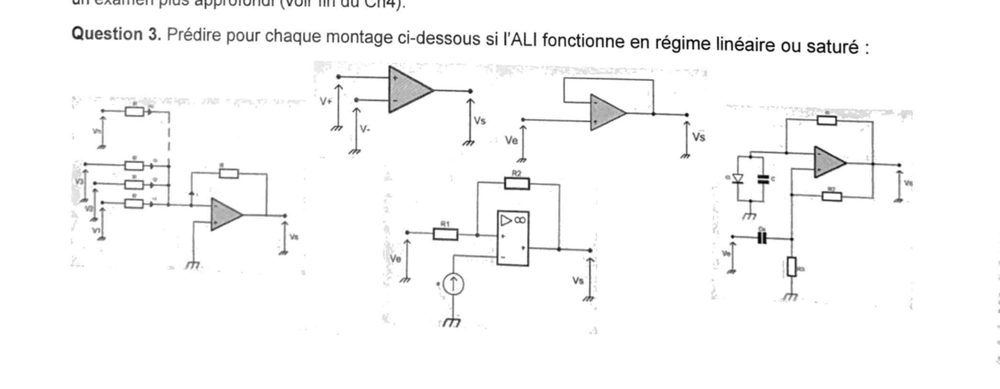
1) Montage 1 (à gauche) : trois entrées et une résistance de contre-réaction
La résistance de contre-réaction relie la sortie uniquement à l'entrée (−), le nœud commun aux trois résistances d'entrée. Le détail des branches \(v_1, v_2, v_3\) ne compte pas.
2) Montage 2 (haut, centre gauche) : \(V_+\) et \(V_-\) imposés, sortie non reliée
Aucune liaison entre la sortie et les entrées : c'est un comparateur en boucle ouverte.
3) Montage 3 (haut, centre droit) : \(v_e\) sur une entrée, sortie reliée à l'autre
Le fil relie la sortie à l'entrée (−). C'est le montage suiveur du §3.1, même s'il est dessiné autrement.
4) Montage 4 (à droite) : diode, condensateur et résistance \(R_2\)
\(R_2\) reboucle la sortie vers l'entrée (+), à travers le réseau diode/condensateur : c'est une rétroaction positive.
2. Un ALI idéal plus simple que l'ALI réel
2.1 · Le modèle de l'ALI idéal
En réalité, \(i_e\approx10^{-8}\)–\(10^{-11}\) A, soit \(R_{entrée}\approx10^{9}\)–\(10^{12}\ \Omega\), et \(R_{sortie}\approx10\ \Omega\) : le modèle idéal est donc une bonne approximation.
2.2 · Le modèle de l'ALI idéal de gain infini (adopté par défaut)
On ajoute une seconde hypothèse : \(A_d\to\infty\). On obtient alors :
- en régime linéaire : \(\varepsilon=0\ \Leftrightarrow\ v_+=v_-\) ;
- en régime saturé : \(v_s=+V_{sat}\) si \(\varepsilon>0\ (v_+>v_-)\), et \(v_s=-V_{sat}\) si \(\varepsilon<0\ (v_+<v_-)\).
Tracer la courbe \(v_s=f(\varepsilon)\) (similaire à celle de Q2) dans le cas d'un ALI idéal « de gain infini ».
Caractéristique de l'ALI idéal de gain infini
Étape 1 : que devient la zone linéaire ?
La zone linéaire a pour pente \(A_d\). Quand \(A_d \to \infty\), la pente devient infinie : la droite devient un segment vertical en \(\varepsilon = 0\).
Étape 2 : la courbe obtenue
Il ne reste que les deux paliers \(\pm V_{sat}\), reliés par un saut en \(\varepsilon = 0\) : c'est la caractéristique d'un comparateur idéal.
En réalité \(A_d\approx2\times10^{5}\), soit \(\varepsilon\approx10^{-4}\) V en régime linéaire pour des tensions de sortie usuelles : le modèle « de gain infini » est donc lui aussi une bonne approximation.
Le schéma équivalent d'un ALI réel est donné ci-contre. Discuter des différences avec un ALI idéal de gain infini.
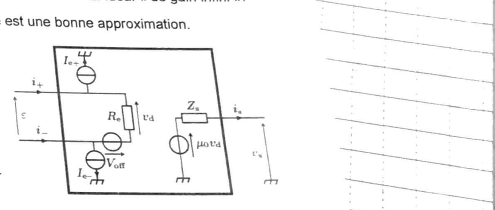
Différences entre l'ALI réel et l'ALI idéal
Étape 1 : les hypothèses du modèle idéal
Étape 2 : comparaison terme à terme
| Grandeur | Modèle idéal (gain infini) | ALI réel (schéma ci-dessus) |
|---|---|---|
| Résistance d'entrée \(R_e\) | \(\to\infty\) | finie (\(\approx10^9\)–\(10^{12}\ \Omega\)) |
| Courants de polarisation \(I_{e+},I_{e-}\) | nuls | non nuls, résiduels (\(\approx10^{-8}\)–\(10^{-11}\) A) |
| Tension de décalage \(V_{off}\) | nulle | non nulle (dissymétrie interne du composant) |
| Gain différentiel \(\mu_0\) | \(\to\infty\) | fini (\(\approx2\times10^5\)) |
| Impédance de sortie \(Z_s\) | \(\to0\) | non nulle (\(\approx\) quelques dizaines de \(\Omega\)) |
Étape 3 : conséquences
- Gain fini : \(\varepsilon\) n'est jamais rigoureusement nul.
- Impédance de sortie non nulle : \(v_s\) dépend un peu de la charge.
- \(V_{off}\) se compense avec les broches de réglage d'offset (§1.1).
3. Principaux montages en régime linéaire (\(\varepsilon=0\Leftrightarrow v_+=v_-\))
3.1 · Le montage suiveur
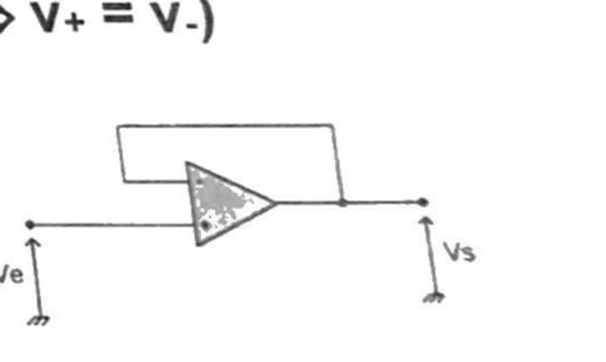
En utilisant les relations du modèle de l'ALI idéal de gain infini, montrer que pour un montage suiveur \(v_s=v_e\) (donc \(H=1\)).
Le suiveur recopie l'entrée
Étape 1 : régime de fonctionnement
La sortie est reliée seulement à l'entrée (−) : régime linéaire.
Étape 2 : potentiels des entrées
- L'entrée (+) reçoit directement \(v_e\) : \(v_+ = v_e\).
- Un fil relie la sortie à l'entrée (−) : \(v_- = v_s\).
Étape 3 : conclusion
\[ v_e = v_+ = v_- = v_s \]En exprimant la tension \(u_0\) aux bornes d'une résistance de charge \(R_0\) pour deux configurations différentes (sans ou avec un montage suiveur inséré), réfléchir à l'intérêt d'un tel montage au labo, quand on utilise une source de tension réelle, ou quand on connecte des filtres passifs analogiques en cascade.
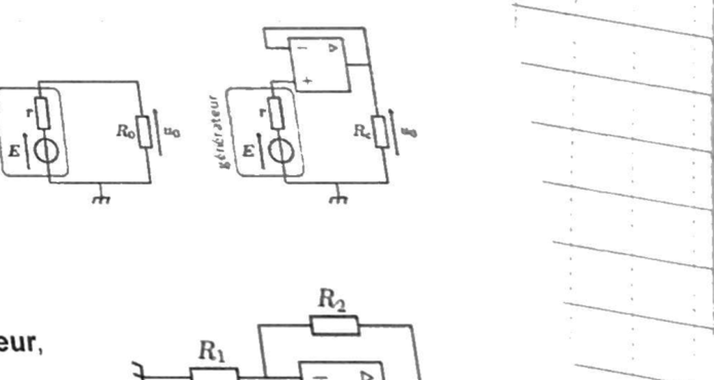
1) Sans suiveur
Le générateur réel \((E, r)\) est relié directement à \(R_0\) : \(r\) et \(R_0\) sont en série.
\[ u_0 = E\,\frac{R_0}{R_0 + r} \]2) Avec suiveur
Étape 1 : côté générateur
L'entrée (+) du suiveur ne tire aucun courant (\(i_+ = 0\)). Il n'y a donc aucune chute de tension dans \(r\) :
\[ v_e = E \]Étape 2 : côté charge
D'après Q6, \(v_s = v_e = E\). La sortie de l'ALI idéal fournit le courant demandé par \(R_0\) sans que sa tension change :
\[ u_0 = v_s = E \]3) Intérêt du suiveur
- Il isole la source de la charge : la charge ne « voit » plus la résistance interne de la source (adaptation d'impédance, rôle de « tampon »).
- Au labo : la tension d'une source réelle n'est plus faussée par ce qu'on lui branche.
- Filtres en cascade (Ch1) : sans suiveur, le second filtre charge le premier et fausse sa fonction de transfert.
3.2 · Le montage amplificateur non inverseur
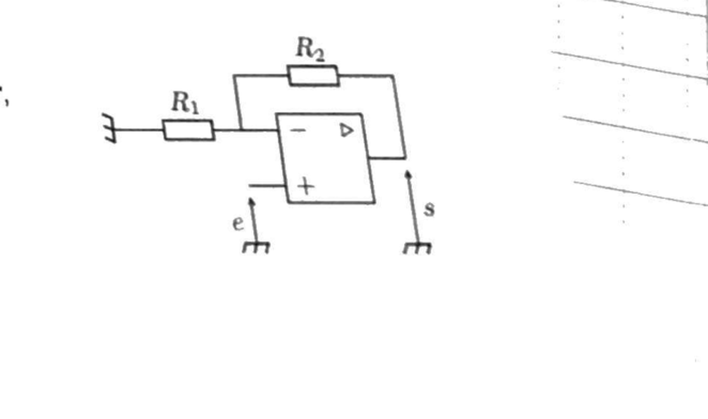
Montrer que, pour un montage amplificateur non inverseur, \(v_s=v_e\times\left(1+\dfrac{R_2}{R_1}\right)\) (donc \(H=1+\dfrac{R_2}{R_1}>1\)). On pourra utiliser un pont diviseur de tension ou une LNTP.
Gain de l'amplificateur non inverseur
Étape 1 : régime de fonctionnement
La rétroaction arrive seulement sur l'entrée (−) : régime linéaire, \(v_+ = v_-\).
Étape 2 : potentiel de l'entrée (−)
L'entrée (−) est le point milieu du pont \(R_1\) (vers la masse) – \(R_2\) (vers \(v_s\)). Aucun courant n'entre dans l'ALI.
Étape 3 : potentiel de l'entrée (+)
L'entrée (+) reçoit directement \(v_e\) : \(v_+ = v_e\).
Étape 4 : on égalise
\[ v_e = v_s\,\frac{R_1}{R_1 + R_2} \] \[ v_s = v_e\,\frac{R_1 + R_2}{R_1} = v_e\left(1 + \frac{R_2}{R_1}\right) \]Exemple : exprimer \(V_A\) dans le cas ci-contre.
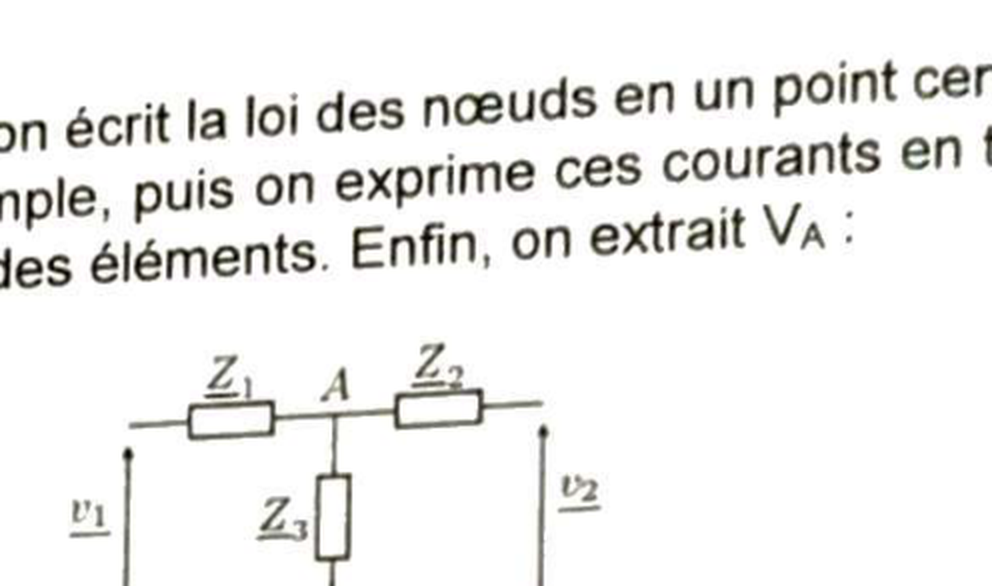
Expression de \(V_A\)
Étape 1 : les branches qui arrivent en \(A\)
- \(v_1\) à travers \(\underline Z_1\) ;
- \(v_2\) à travers \(\underline Z_2\) ;
- la masse (potentiel 0) à travers \(\underline Z_3\).
Étape 2 : on applique la formule
Le terme de la masse vaut \(0/\underline Z_3 = 0\) au numérateur, mais \(1/\underline Z_3\) reste au dénominateur.
3.3 · Le montage amplificateur inverseur
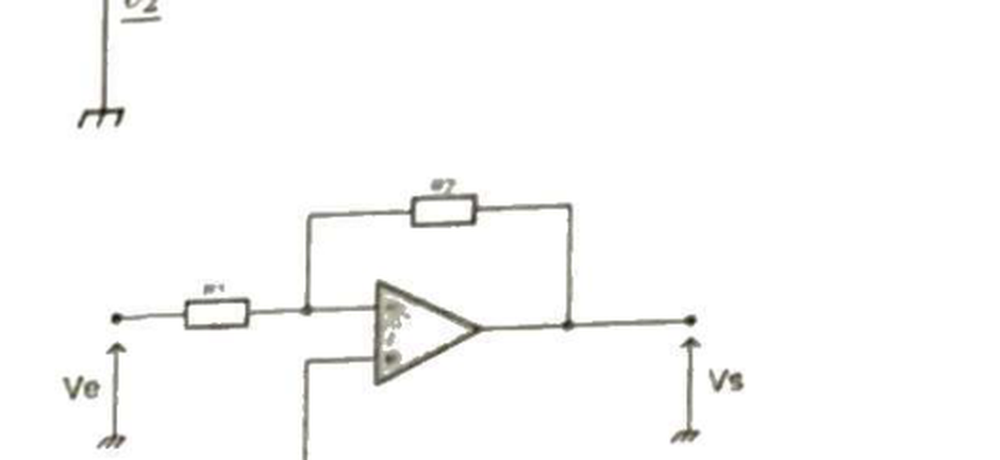
Montrer que, pour un montage amplificateur inverseur, \(v_s=v_e\times\left(-\dfrac{R_2}{R_1}\right)\) (donc \(H=-\dfrac{R_2}{R_1}\), déphasage \(\pi\)).
Gain de l'amplificateur inverseur
Étape 1 : masse virtuelle
L'entrée (+) est à la masse, \(v_+ = 0\). La rétroaction arrive seulement sur (−) : régime linéaire.
\[ v_- = v_+ = 0 \]Étape 2 : le même courant traverse \(R_1\) et \(R_2\)
Comme \(i_- = 0\), le courant \(i_1\) qui arrive par \(R_1\) repart entièrement par \(R_2\) :
\[ i_1 = \frac{v_e - v_-}{R_1} = \frac{v_e}{R_1} \qquad\qquad i_1 = \frac{v_- - v_s}{R_2} = \frac{-v_s}{R_2} \]Étape 3 : on égalise
\[ \frac{v_e}{R_1} = \frac{-v_s}{R_2} \] \[ v_s = -v_e\,\frac{R_2}{R_1} \]- Si \(R_2 > R_1\), le montage amplifie ; si \(R_2 < R_1\), il atténue. Dans les deux cas, il inverse.
- Son impédance d'entrée vaut \(R_1\), finie : il peut perturber le circuit placé en amont, contrairement au suiveur (Q7).
3.4 · Le montage intégrateur
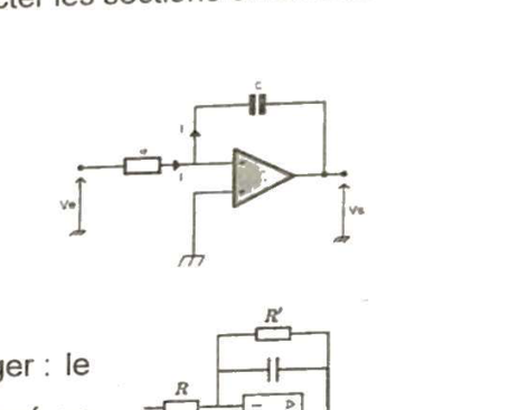
Montrer que, pour un montage intégrateur, \(v_s(t)=v_s(0)-\dfrac{1}{RC}\displaystyle\int_0^t v_e(t')\,dt'\) (donc \(\underline H=-\dfrac{1}{jRC\omega}\)). On exprimera la LNTP à la borne (−) en complexes avant de passer en temporel.
Relation intégrale du montage intégrateur
Étape 1 : masse virtuelle
Comme en Q10 : \(v_+ = 0\), rétroaction sur (−) seulement, donc \(v_- = 0\).
Étape 2 : les deux courants en complexes
Le courant qui traverse \(R\) (de \(v_e\) vers la borne (−)) passe entièrement dans \(C\) (de la borne (−) vers \(v_s\)) :
\[ \underline i_1 = \frac{\underline v_e - 0}{R} = \frac{\underline v_e}{R} \qquad\qquad \underline i_C = jC\omega\,(0 - \underline v_s) = -jC\omega\,\underline v_s \]Étape 3 : fonction de transfert
\[ \frac{\underline v_e}{R} = -jC\omega\,\underline v_s \] \[ \underline H = \frac{\underline v_s}{\underline v_e} = -\frac{1}{jRC\omega} \]Étape 4 : retour au temps
La relation \(\underline i_1 = \underline i_C\) devient :
\[ \frac{v_e(t)}{R} = -C\,\frac{dv_s}{dt} \qquad\Longrightarrow\qquad \frac{dv_s}{dt} = -\frac{v_e(t)}{RC} \]On intègre entre 0 et \(t\) :
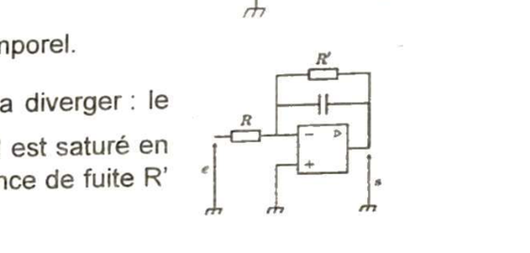
3.5 · Le montage dérivateur
Schématiser le montage dérivateur qui suit le comportement \(v_s(t)=-RC\dfrac{dv_e(t)}{dt}\).
Schéma du dérivateur
Étape 1 : partir de l'intégrateur
On échange les rôles de \(R\) et \(C\) par rapport à l'intégrateur (§3.4) :
- \(C\) passe en entrée, entre \(v_e\) et la borne (−) ;
- \(R\) passe en contre-réaction, entre la sortie et la borne (−) ;
- la borne (+) reste à la masse.
Étape 2 : vérification
Masse virtuelle (\(v_- = 0\)) et \(i_- = 0\) : le courant \(\underline i_C = jC\omega\,\underline v_e\) traverse \(R\) vers la sortie.
\[ \underline v_s = -R\,\underline i_C = -jRC\omega\,\underline v_e \qquad\Longleftrightarrow\qquad v_s(t) = -RC\,\frac{dv_e}{dt} \]4. Des écarts possibles à la réponse linéaire
Même dans le cadre de l'ALI idéal, les réponses \(v_s\) réellement observées peuvent différer de celles prédites au §3, pour plusieurs raisons.
Saturation en tension
Puisque \(v_{s,max}=V_{sat}\), une saturation en tension peut se produire si le gain du montage, ou si l'amplitude \(E_m\) du signal d'entrée, sont trop élevés.
Proposer une valeur limite pour \(R_2\) dans le cas d'un montage amplificateur inverseur avec un signal d'entrée tel que \(E_m=5{,}0\) V et une résistance \(R_1=100\ \Omega\). Sur un même graphique, tracer l'allure de l'oscillogramme de \(v_s(t)\) dans deux cas distincts : pour \(R_2=200\ \Omega\) et pour \(R_2=400\ \Omega\).
1) Valeur limite de \(R_2\)
Étape 1 : amplitude de sortie attendue
Étape 2 : condition de non-saturation
Avec une alimentation \(\pm 15\) V, il faut \(V_{s,m} \le V_{sat} \approx 15\) V :
\[ E_m\,\frac{R_2}{R_1} \le V_{sat} \iff R_2 \le \frac{V_{sat}\,R_1}{E_m} \] \[ R_2 \le \frac{15\times100}{5{,}0} = 300\ \Omega \]2) Oscillogrammes pour \(R_2 = 200\ \Omega\) et \(R_2 = 400\ \Omega\)
- \(R_2 = 200\ \Omega\) : gain 2, amplitude \(2\times5{,}0 = 10\) V, sous 15 V. Pas de saturation : sinusoïde \(\pm10\) V, en opposition de phase avec \(v_e\).
- \(R_2 = 400\ \Omega\) : gain 4, amplitude idéale \(4\times5{,}0 = 20\) V, au-dessus de 15 V. La sinusoïde est écrêtée à \(\pm15\) V.
Saturation en courant
Un ALI ne peut délivrer un courant de sortie trop important. Si la résistance de charge est trop faible, la saturation en courant (\(i_{s,max}\approx20\) mA pour un ALI type LM741) est atteinte, et la tension de sortie en est affectée.
Sur un même graphique, tracer l'allure de l'oscillogramme de \(v_s(t)\) d'un montage suiveur dont le signal d'entrée est sinusoïdal symétrique, d'amplitude \(6{,}0\) V, dans deux cas distincts : lorsque l'ALI est en sortie ouverte, et lorsque la sortie de l'ALI est branchée à une charge de résistance \(200\ \Omega\).
1) Sortie ouverte
Aucun courant n'est demandé à l'ALI (\(i_s = 0\)) : pas de saturation en courant possible. D'après Q6, \(v_s = v_e\).
2) Sortie chargée par \(R_0 = 200\ \Omega\)
Étape 1 : courant demandé à l'ALI
L'ALI ne peut pas fournir plus que \(i_{s,max} \approx 20\) mA.
Étape 2 : tension maximale en sortie
\[ |v_s|_{max} = i_{s,max}\times R_0 = 20\times10^{-3}\times200 = 4{,}0\ \text{V} \]Étape 3 : comparaison
\(4{,}0\) V est inférieur aux \(6{,}0\) V visés : la sortie est écrêtée dès que la sinusoïde dépasserait 4,0 V.
Limitations en fréquence
- Si la fréquence \(f\) de \(v_e(t)\) est trop élevée, le gain différentiel \(A_d\) diminue (d'après le modèle du « gain dynamique », §2.2).
- Si \(f\) est trop élevée, le délai de réponse de l'ALI à une variation de tension affecte aussi la sortie. Ce délai est caractérisé par la vitesse de balayage de l'ALI (slew rate), \(SR\approx1\) V/µs pour un ALI type LM741.
Schémas à retenir, propriétés et quizz
Les 6 schémas
Clique sur une carte pour la révéler : cache la correction et essaie d'abord de retrouver le nom, la fonction de transfert et le défaut du montage.
Propriétés à connaître
🧠 Quizz
Les 6 exercices du TD3 corrigés un par un, avec le même niveau de détail que les TD précédents : montage sommateur inverseur, pseudo-intégrateur (compromis intégrateur/amplificateur), convertisseur à résistance négative, montage à deux ALI en cascade, filtres passe-bas/passe-haut mis en cascade (Bode, facteur de qualité, équation différentielle) et simulateur d'inductance à deux ALI (gyrateur). AM2 · P2030 · Semestre 3 — D. Courtois, 21/09/2026.
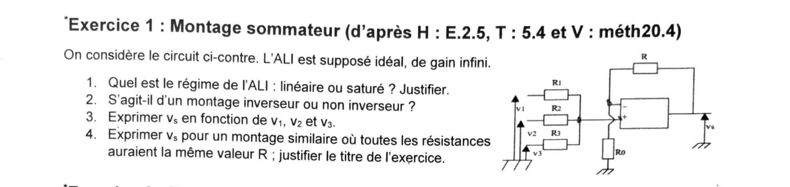
1) Quel est le régime de l'ALI : linéaire ou saturé ? Justifier.
- La sortie revient sur l'entrée (−) par \(R\).
- Aucun chemin ne ramène la sortie vers l'entrée (+), qui ne voit que \(v_1, v_2, v_3\).
2) S'agit-il d'un montage inverseur ou non inverseur ?
- Les trois signaux \(v_1, v_2, v_3\) arrivent sur l'entrée (+).
- L'entrée (−) ne voit qu'un diviseur \(R_0\) / \(R\) issu de la sortie.
C'est la structure de l'amplificateur non inverseur : chaque entrée se retrouve en sortie avec un signe \(+\).
3) Exprimer \(v_s\) en fonction de \(v_1\), \(v_2\) et \(v_3\)
Étape 1 : Millman sur l'entrée (+)
Aucun courant n'entre dans l'ALI. L'entrée (+) est reliée à \(v_1, v_2, v_3\) par \(R_1, R_2, R_3\) :
\[ v_+ = \frac{\dfrac{v_1}{R_1} + \dfrac{v_2}{R_2} + \dfrac{v_3}{R_3}}{\dfrac{1}{R_1} + \dfrac{1}{R_2} + \dfrac{1}{R_3}} \]\(v_+\) est une moyenne de \(v_1, v_2, v_3\), pondérée par les conductances \(1/R_i\).
Étape 2 : l'entrée (−)
Étape 3 : on égalise \(v_- = v_+\)
4) Exprimer \(v_s\) pour toutes les résistances égales à \(R\) ; justifier le titre de l'exercice
Étape 1 : l'entrée (+)
Avec \(R_1 = R_2 = R_3\), la moyenne pondérée devient une moyenne simple :
\[ v_+ = \frac{v_1 + v_2 + v_3}{3} \]Étape 2 : le gain
Avec \(R_0 = R\) : \(1 + \dfrac{R}{R_0} = 2\).
\[ v_s = 2\times\frac{v_1 + v_2 + v_3}{3} \]1) Schématiser le montage, retrouver \(\underline H\) par la LNTP en complexes
Étape 1 : le schéma
On part de l'intégrateur : \(v_e\) arrive par \(R\) sur l'entrée (−), \(C\) est en contre-réaction, l'entrée (+) est à la masse. On ajoute \(R'\) en parallèle de \(C\).
Étape 2 : masse virtuelle
La rétroaction arrive seulement sur (−) : régime linéaire, \(v_- = v_+ = 0\).
Étape 3 : impédance de contre-réaction
Étape 4 : LNTP sur l'entrée (−)
Aucun courant n'entre dans l'ALI : la somme des courants qui partent du nœud est nulle.
\[ \frac{0 - \underline v_e}{R} + \frac{0 - \underline v_s}{\underline Z_f} = 0 \] \[ \underline v_s = -\frac{\underline Z_f}{R}\,\underline v_e \]2) Montrer que ce montage se comporte comme l'intégrateur à HF mais ne diverge pas à BF
Étape 1 : en haute fréquence (\(\omega \gg \omega_1\))
\(R'C\omega \gg 1\), donc \(1 + jR'C\omega \approx jR'C\omega\) :
\[ \underline H \approx -\frac{R'/R}{jR'C\omega} = -\frac{1}{jRC\omega} \]C'est exactement la fonction de transfert de l'intégrateur pur.
Étape 2 : en basse fréquence (\(\omega \ll \omega_1\))
\(R'C\omega \ll 1\), donc \(1 + jR'C\omega \approx 1\) :
\[ \underline H \approx -\frac{R'}{R} \]Le gain reste fini, alors que celui de l'intégrateur pur, \(1/(RC\omega)\), tend vers l'infini.
3) Gamme de fréquence utilisable comme intégrateur ; choix de \(R'\)
Étape 1 : gamme de fréquence
Le comportement intégrateur demande \(\omega \gg \omega_1\), c'est-à-dire :
\[ f \gg f_1 = \frac{1}{2\pi R'C} \]En pratique on prend au moins une décade : \(f \ge 10\,f_1\).
Étape 2 : deux contraintes sur \(R'\)
- \(R'\) grande : \(f_1\) descend, la plage où le montage intègre s'élargit.
- \(R'\) finie : c'est elle qui limite le gain continu à \(R'/R\). Sans elle, la moindre tension de décalage de l'ALI réel, intégrée sans fin, fait dériver la sortie jusqu'à saturation.
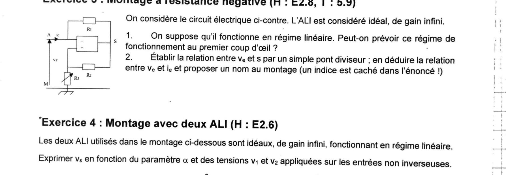
1) Régime linéaire supposé : peut-on le prévoir au premier coup d'œil ?
- La sortie revient sur l'entrée (−) par \(R_1\) : rétroaction négative.
- Elle revient aussi sur l'entrée (+) par le diviseur \(R_2\) / \(R_3\) : rétroaction positive.
2) Relation \(v_e\)–\(s\) par pont diviseur ; relation \(v_e\)–\(i_e\) ; nom du montage
Étape 1 : pont diviseur sur l'entrée (+)
L'entrée (+) n'absorbe aucun courant : \(R_2\) et \(R_3\) sont en série entre \(S\) et la masse.
\[ v_e = s\,\frac{R_3}{R_2 + R_3} \qquad\Longleftrightarrow\qquad s = v_e\,\frac{R_2 + R_3}{R_3} \]Étape 2 : potentiel de \(A\)
En régime linéaire, \(v_- = v_+\). Or \(v_- = v_A\) :
\[ v_A = v_e \]Étape 3 : courant \(i_e\)
Au nœud \(A\), l'ALI n'absorbe rien : tout \(i_e\) repart par \(R_1\) vers \(S\).
\[ i_e = \frac{v_A - s}{R_1} = \frac{v_e - s}{R_1} \]On remplace \(s\) :
\[ i_e = \frac{v_e}{R_1}\left(1 - \frac{R_2 + R_3}{R_3}\right) = -\frac{v_e}{R_1}\times\frac{R_2}{R_3} \]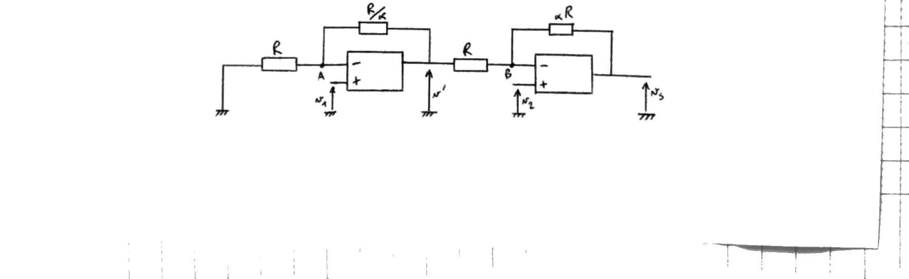
Exprimer \(v_s\) en fonction de \(\alpha\), \(v_1\) et \(v_2\)
Étape 1 : étage 1
\(v_{+1} = v_1\), donc \(v_A = v_1\). Le courant qui descend dans \(R\) (de \(A\) vers la masse) arrive par \(R/\alpha\) (de \(v'\) vers \(A\)) :
\[ \frac{v' - v_1}{R/\alpha} = \frac{v_1 - 0}{R} \] \[ \alpha\,(v' - v_1) = v_1 \qquad\Longrightarrow\qquad v' = v_1\,\frac{1 + \alpha}{\alpha} \]On reconnaît le gain du non inverseur : \(1 + \dfrac{R/\alpha}{R} = \dfrac{1 + \alpha}{\alpha}\).
Étape 2 : étage 2
\(v_{+2} = v_2\), donc \(v_B = v_2\). LNTP au nœud \(B\) :
\[ \frac{v_B - v'}{R} + \frac{v_B - v_s}{\alpha R} = 0 \]On multiplie par \(\alpha R\) :
\[ \alpha\,(v_B - v') + (v_B - v_s) = 0 \qquad\Longrightarrow\qquad v_s = (1 + \alpha)\,v_B - \alpha\,v' \]Étape 3 : on remplace
\[ v_s = (1 + \alpha)\,v_2 - \alpha\times v_1\,\frac{1 + \alpha}{\alpha} = (1 + \alpha)\,v_2 - (1 + \alpha)\,v_1 \]Étape 4 : vérification avec \(\alpha = 1\)
\(v' = 2v_1\), puis \(v_s = 2v_2 - v' = 2v_2 - 2v_1\). La formule donne \((1 + 1)(v_2 - v_1)\) : c'est cohérent.
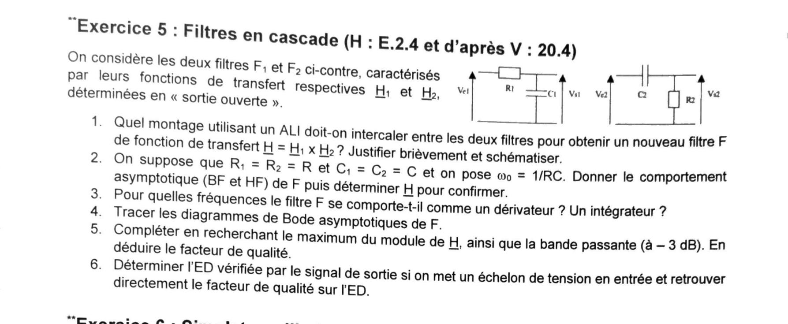
1) Montage à intercaler pour obtenir \(\underline H=\underline{H_1}\times\underline{H_2}\)
Étape 1 : le problème
Si on branche \(F_2\) directement après \(F_1\), \(F_2\) tire du courant sur \(F_1\) : il le « charge ». \(\underline H_1\) n'est alors plus la fonction de transfert en sortie ouverte.
Étape 2 : ce qu'il faut
- Un étage qui ne tire aucun courant sur \(F_1\) : impédance d'entrée infinie.
- Un étage qui alimente \(F_2\) sans que sa tension change : impédance de sortie nulle.
- Un gain 1, pour ne rien modifier d'autre.
2) Avec \(R_1=R_2=R\), \(C_1=C_2=C\), \(\omega_0=1/RC\) : comportement asymptotique et \(\underline H\)
Étape 1 : fonction de transfert
On pose \(x = \omega/\omega_0 = RC\omega\) :
\[ \underline H = \frac{1}{1 + jx}\times\frac{jx}{1 + jx} = \frac{jx}{(1 + jx)^2} \]Étape 2 : en basse fréquence (\(x \ll 1\))
\(1 + jx \approx 1\) :
\[ \underline H \approx jx \]Gain proportionnel à \(\omega\) : pente +20 dB/déc, phase \(+90^\circ\).
Étape 3 : en haute fréquence (\(x \gg 1\))
\((1 + jx)^2 \approx (jx)^2 = -x^2\) :
\[ \underline H \approx \frac{jx}{-x^2} = \frac{1}{jx} \]Gain proportionnel à \(1/\omega\) : pente −20 dB/déc, phase \(-90^\circ\).
Étape 4 : module exact
\[ |\underline H| = \frac{1}{\sqrt{1 + x^2}}\times\frac{x}{\sqrt{1 + x^2}} = \frac{x}{1 + x^2} \]3) Pour quelles fréquences \(F\) se comporte-t-il en dérivateur ? en intégrateur ?
- BF (\(\omega \ll \omega_0\)) : \(\underline H \approx jRC\omega\), soit \(v_s = RC\,\dfrac{dv_e}{dt}\).
- HF (\(\omega \gg \omega_0\)) : \(\underline H \approx \dfrac{1}{jRC\omega}\), soit \(v_s = \dfrac{1}{RC}\displaystyle\int v_e\,dt\).
4) Diagrammes de Bode asymptotiques de \(F\)
Étape 1 : gain
- Asymptote BF : \(20\log x\), pente +20 dB/déc, passe par 0 dB en \(x = 1\).
- Asymptote HF : \(-20\log x\), pente −20 dB/déc, passe aussi par 0 dB en \(x = 1\).
- Courbe réelle en \(x = 1\) : \(|\underline H| = 1/2\), soit −6 dB, sous le croisement des asymptotes.
Étape 2 : phase
\(+90^\circ\) en BF, \(0^\circ\) en \(x = 1\), \(-90^\circ\) en HF.
5) Maximum de \(|\underline H|\), bande passante à −3 dB, facteur de qualité
Étape 1 : maximum
Elle s'annule pour \(x = 1\) (on garde \(x > 0\)) :
\[ |\underline H|_{max} = |\underline H(1)| = \frac12 \quad(-6{,}0\ \text{dB}) \]Étape 2 : coupures à −3 dB
On cherche \(|\underline H| = \dfrac{H_{max}}{\sqrt2} = \dfrac{1}{2\sqrt2}\) :
\[ \frac{x}{1 + x^2} = \frac{1}{2\sqrt2} \iff x^2 - 2\sqrt2\,x + 1 = 0 \]\(\Delta = 8 - 4 = 4\), donc :
\[ x = \frac{2\sqrt2 \pm 2}{2} = \sqrt2 \pm 1 \]\(x_{bas} \approx 0{,}414\) et \(x_{haut} \approx 2{,}414\). Leur produit vaut 1 : \(x = 1\) est leur moyenne géométrique.
Étape 3 : bande passante et facteur de qualité
6) Équation différentielle vérifiée par \(s(t)\) ; facteur de qualité retrouvé sur l'ED
Étape 1 : produit en croix
On note \(\tau = RC\) :
\[ (1 + j\tau\omega)^2\,\underline S = j\tau\omega\,\underline E \] \[ \left(1 + 2\tau\,(j\omega) + \tau^2\,(j\omega)^2\right)\underline S = \tau\,(j\omega)\,\underline E \]Étape 2 : retour au temps
Étape 3 : identification
Étape 4 : réponse à un échelon
Pour \(t > 0\), \(\dot e = 0\) : l'équation est homogène, d'équation caractéristique \(\tau^2\lambda^2 + 2\tau\lambda + 1 = 0\).
\[ \Delta = 4\tau^2 - 4\tau^2 = 0 \qquad\Longrightarrow\qquad \lambda = -\frac1\tau\ \text{(racine double)} \]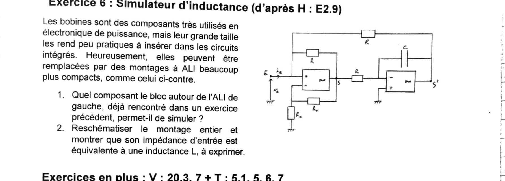
1) Quel composant le bloc autour de l'ALI de gauche permet-il de simuler ?
Étape 1 : le diviseur \(R_0\) / \(R_0\)
Étape 2 : régime linéaire
\(v_- = v_+\), avec \(v_+ = E\) :
\[ \frac{S}{2} = E \qquad\Longrightarrow\qquad S = 2E \]L'ALI n°1 est un amplificateur non inverseur de gain 2.
Étape 3 : courant dans la résistance locale \(R\)
\[ i_{E\to S} = \frac{E - S}{R} = \frac{E - 2E}{R} = -\frac{E}{R} \]Le rapport tension/courant vaut \(\dfrac{E}{-E/R} = -R\).
2) Reschématiser le montage entier ; montrer que \(Z_{in}\) est une inductance, exprimer \(L\)
Étape 1 : l'intégrateur (ALI n°2)
Entrée (+) à la masse, contre-réaction par \(C\) : régime linéaire, \(v_{N_2} = 0\). LNTP en \(N_2\) :
\[ \frac{S - 0}{R} + \frac{S' - 0}{1/(jC\omega)} = 0 \qquad\Longrightarrow\qquad S' = -\frac{S}{jRC\omega} \]Étape 2 : on remplace \(S = 2E\)
\[ S' = -\frac{2E}{jRC\omega} \]Étape 3 : courant d'entrée
Aucun courant n'entre dans l'entrée (+) de l'ALI n°1. Le courant \(i_e\) se partage entre la résistance locale et la résistance extérieure :
\[ i_e = \frac{E - S}{R} + \frac{E - S'}{R} = -\frac{E}{R} + \frac{E - S'}{R} = -\frac{S'}{R} \] \[ i_e = \frac{2E}{jR^2C\omega} \]Étape 4 : impédance d'entrée
📚 Scholarvox : révisions DS2 (Vidal, Physique PT)
Source : Physique PT, Vidal (éd. Ellipses), bibliothèque numérique Scholarvox. Recherche « Physique PT » : première proposition, couverture jaune.
- Ch20 du livre = Ch3 et Ch4 pour nous.
- Méthode 20.3 = Activité 4, Ex1.
- Méthode 20.5 = basculements pour comparateur à hystérésis non inverseur non symétrique (voir aussi Ch4).
- Exercices pas très pertinents.